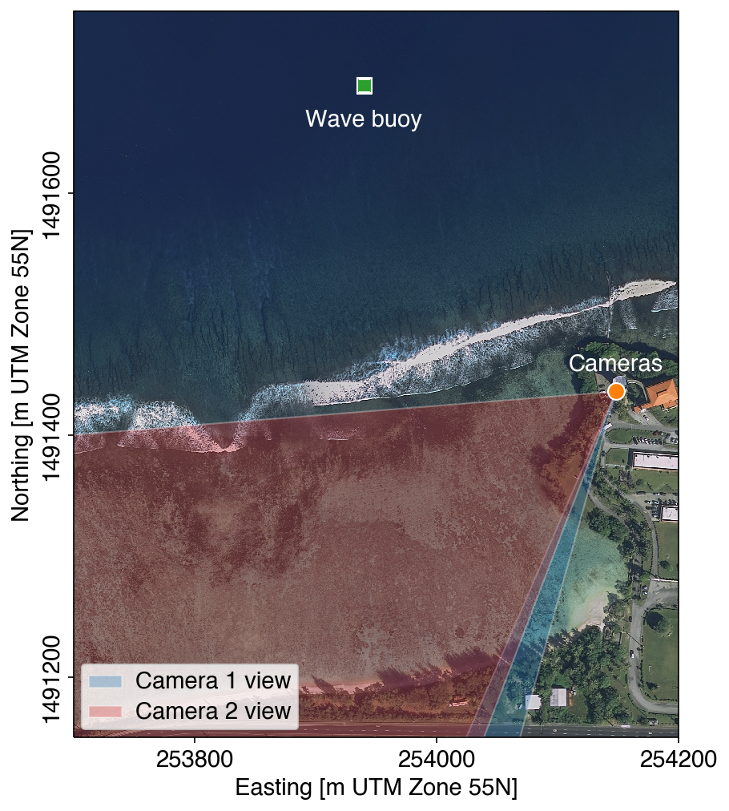

This page shows imagery and wave characteristics near Adelup Point, Guam. These data are collected as part of the USGS Coral Reef project. Times for wave data are in UTC; image time stamps are in Chamorro Time Zone (local).
The image below shows the locations of the cameras, both looking roughly west, and the wave buoy.
